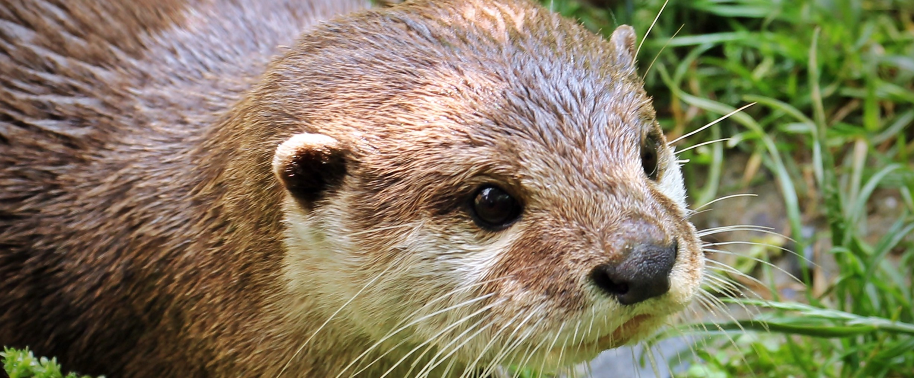
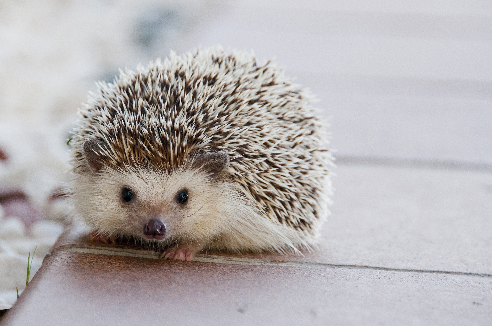
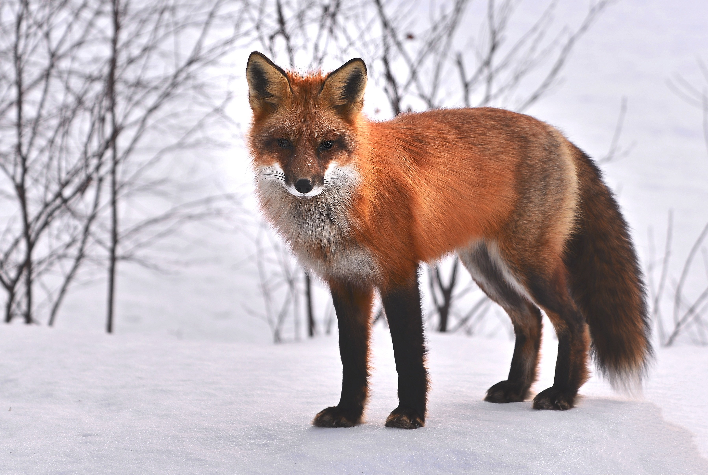
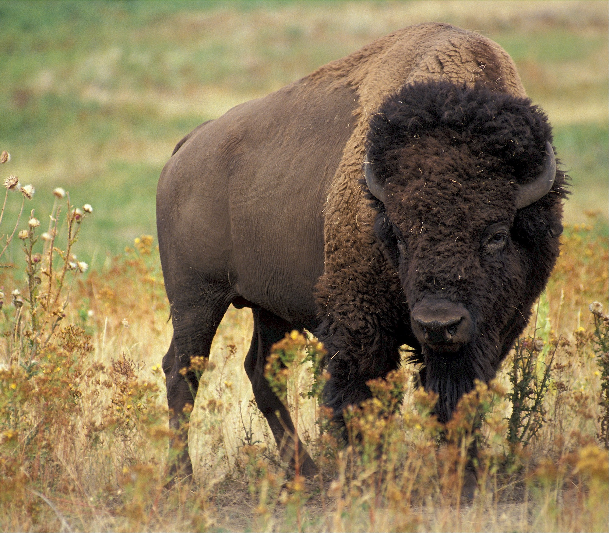
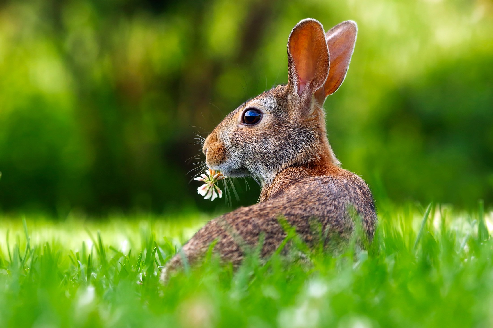
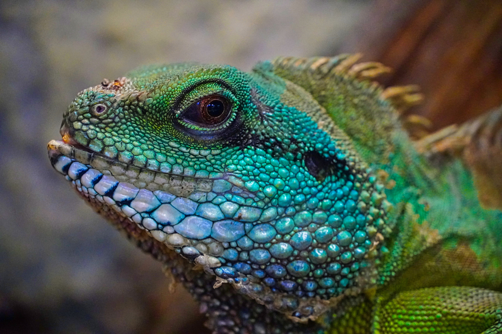
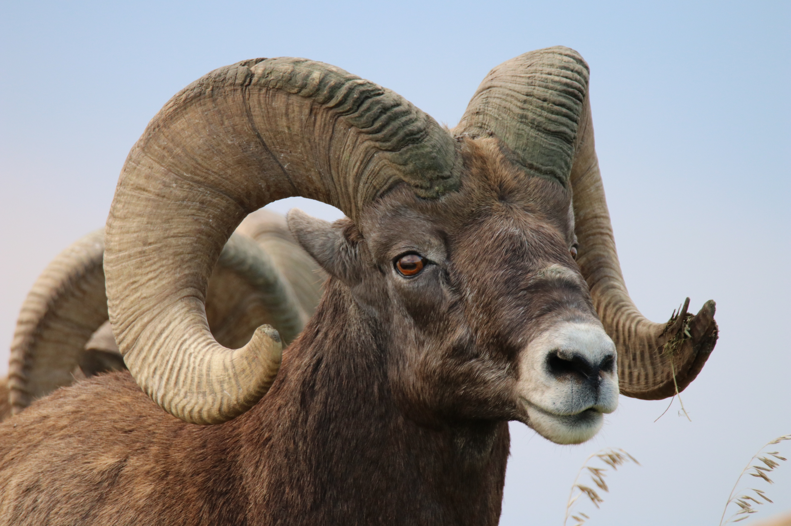
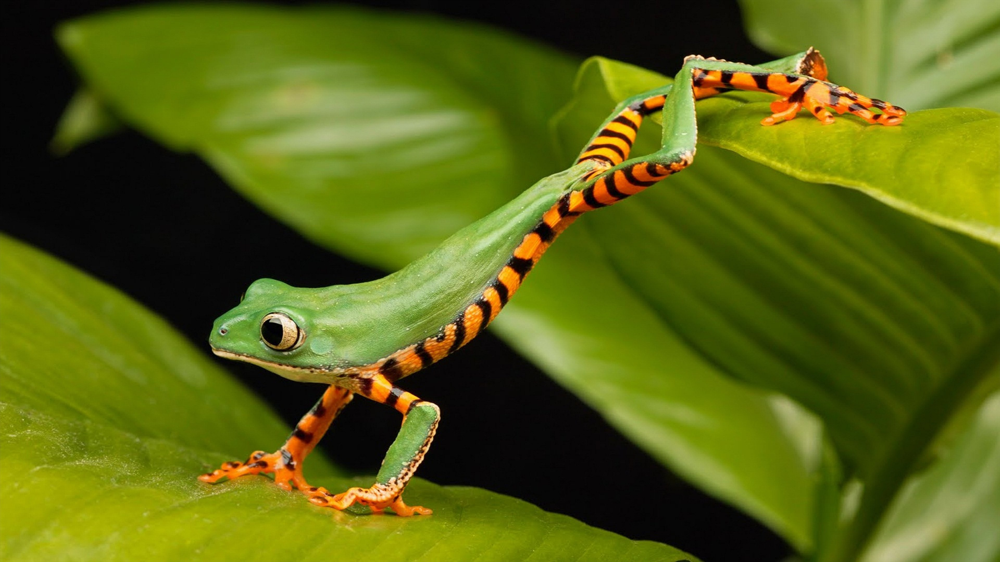

Click on the smaller images
Finding the right time and lighting is key to taking a picture-perfect photograph. Including the patience with waiting around. Time, specific times of day, and patience is key, especially if its a living creature.







